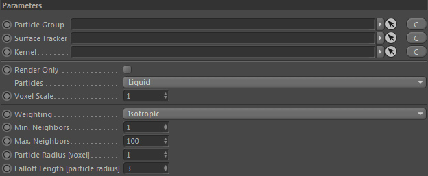
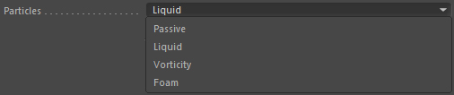
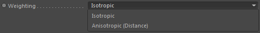
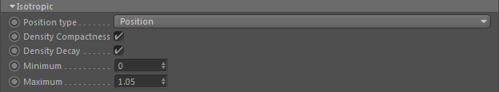
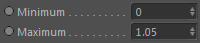

Parameters

Particle Group
The particle group that contains the particles to reconstruct a surface from.
Surface tracker
Place a surface tracker here to extract volume depth information from.
Currently only the liquid/viscous dynamics contain an internal surface tracker that can be used.
This will activate the Constraints::Max. Distance setting.
Kernel
Link a custom Kernel node here to define the falloff kernel used for reconstruction. If none is linked a standard cubic spline kernel will be used.
Render Only

If activated it will only operate if rendering to the picture viewer or NET renderer.
Particles

The particle type to use from the linked Particle Group.
Voxel Scale
The surface reconstructor can calculate the surface with a higher resolution (internally) than the global voxel size. This is a scaling factor for the global voxel size.
A value of 2.0 will give half the global voxel size (doubling the resolution).
Usually a value of 1.0 is good for very fast previews. For final rendering a value of 2 is recommended.
A value of 3 is rarely used but may be necessary sometimes (especially when using the anisotropic mode).
Weighting

Defines the weighting of the mesher. There are two algorithms available.
Isotropic
Uses Isotropic weighting.
Anisotropic
Uses Anisotropic weighting which can result in thin areas getting even thinner.
Min. Neighbors
Minimum amount of neighbors that need to be found to be included in the weighting.
Max. Neighbors
Maximum amount of neighbors that need to be found to be included in the weighting. The higher this value the better the smoothing approximation.
Note: Using higher values results in slower calculations.
Particle Radius [voxel]
The radius of a particle. Values between 0.5 and 1.0 make most sense here. The value is given in grid cell/voxel size (1.0 = size of a grid cell).
Lower values result in smaller features but may miss neighboring particles. In that case increase the Falloff Length.
Falloff Length [particle radius]
The falloff length defines the maximum distance to search for neighboring particles to calculate a weighted result. Higher values
result in smoother surfaces but also small scale details may disappear.
The falloff length is always a multiplier of the Particle radius. So a value of 3.0 is 3.0 * Particle Radius.
Parameters::Isotropic

Position type
Defines which position of a particle to take into account for reconstruction.
Position
The position of the particle.
Weighted Position
The weighted position as calculated by a POP::Volume Properties.
Deformed Position
The deformed position of the particle (e.g. calculated by a POP::Deform).
Density Compactness
Only available if particles have a density attached (for example via a Volume Properties node).
This gives the surface a more compact appearance based on the particle isodensity.
Density Decay
Only available if particles have a density attached (for example via a Volume Properties node).
This gets rid of 'Ghost surfaces artefacts' which are small surfaces being reconstructed between particles where there shouldn't necessarily be a surface anymore
because the particles are too far away from each other.
Minimum

Only available if particles have a density attached (for example via a Volume Properties node).
The minimum isodensity for the decay falloff.
Maximum
Only available if particles have a density attached (for example via a Volume Properties node).
The maximum isodensity for the decay falloff. The higher you set this the more 'Ghost surface artefacts' disappear. At some (scene dependant) threshold this will also affect
the normal surface (which you don't want to happen). Values between 1.0 and 2.5 give best results.